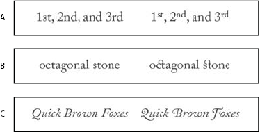

OpenType fonts
OpenType fonts use a single font file for both Windows® and Macintosh® computers, so you can move files from one platform to another without worrying about font substitution and other problems that cause text to reflow. They may include a number of features, such as swashes and discretionary ligatures, that aren’t available in current PostScript and TrueType fonts.
 OpenType fonts display the
OpenType fonts display the  icon.
icon. When working with an OpenType font, you can automatically substitute alternate glyphs, such as ligatures, small capitals, fractions, and old style proportional figures, in your text.

- A.
- Ordinals
- B.
- Discretionary ligatures
- C.
- Swashes
OpenType fonts may include an expanded character set and layout features to provide richer linguistic support and advanced typographic control. OpenType fonts from Adobe that include support for central European (CE) languages include the word “Pro,” as part of the font name in application font menus. OpenType fonts that don’t contain central European language support are labeled “Standard,” and have an “Std” suffix. All OpenType fonts can also be installed and used alongside PostScript Type 1 and TrueType fonts.
For more information on OpenType fonts, see www.adobe.com/go/opentype.